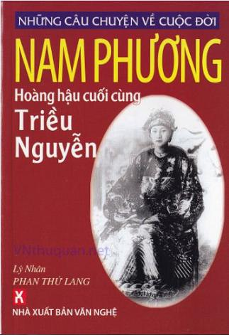

Thuở nhỏ, mái trường mà tôi được vinh hạnh nhập học đầu tiên là trường Couvent des Oiseaux do các nữ tu trong dòng Đức Bà quản giáo tọa lạc tại đường Parreua ( gần Bưởi hay là đường Hoàng Hoa Thám ) Hà Nội. Khi tôi học ở lớp mẫu giáo của trường Convent des Oiseaux thì bà Nam Phương Hoàng hậu tới thăm. Chúng tôi là những học sinh nhỏ tuổi được cầm những bó hoa tươi đứng trước sân để nghênh đón Hoàng hậu. Hai em học sinh Việt và Pháp bưng hoa lên dâng tặng Nam Phương Hoàng hâu. Bà Nam Phương cám ơn nhà trường và các em học sinh, rồi ôm hôn hai em đang tặng hoa.
Lý do bà Nam Phương tới thăm trường Convent des Oiseaux Hà Nội vì những ngày du học tại Pháp, bà Nam Phương đã có thời gian theo học trường Convent des Oiseaux Paris cũng do các nữ tu dòng Đức Bà phụ trách mà hồi đó người ta đều kêu danh xưng là các Mẹ ( Mère )
Bà Nam Phương có net mặt hiền hậu và đạo hạnh. Hình ảnh Nam Phương hoàng hậu vấn khăn vành vàng in trên con tem đã để lại ấn tượng trong nhiều người lớn tuổi. Đến năm 1945 tôi đọc báo thấy bà hưởng ứng Tuần Lễ Vàng tại Huế bằng hành động tự trao tất cả những quý kim vàng bạc châu báu mà bà đang mang trên người để tặng Nhà nước mua vũ khí chống thực dân Pháp. Rồi bà Nam Phương còn làm việc thiện, như vào dịp Tết năm 1946, Chủ tịch Ủy ban Hành chánh Huế trao bà Nam Phương số tiền 10 ngàn đồng bạc, nói là của Hồ Chủ Tịch chuyển vào để tặng bà và gia đình ăn Tết. Với số tiền này thời đó là lớn lắm. Bà Nam Phương nhận số tiền trên, gởi lời cảm ơn Cụ Hồ và Ủy ban Hành chánh Huế. Sau đó, bà Nam Phương đã chuyển số tiền 10 ngàn đồng bạc cho các bà phước trông coi cô nhi viện ở Huế để các cháu ăn tết mà các cô nhi đang thiếu thốn vì chiến tranh vừa xảy ra.
Cũng năm 1946, bà Nam Phương còn có một hành động yêu nước khi thực dân Pháp đem quân trở lại xâm lược Việt Nam. Đó là bà đã viết một lá thư ngỏ như một Thông điệp ( Message ) gửi tới những bạn hữu ở châu Âu và thế giới yêu cầu họ lên tiếng tố cáo sự trở lại của quân đội Pháp làm đổ máu đồng bào Nam bộ.
Những hành động trên không riêng cá nhân tôi trân trọng, mà mọi người đều kính phục nhân cách của một bà cựu hoàng hậu nước Việt. Vì vậy, khi bước chân vào làm báo, với lòng ngưỡng mộ, tôi đã cố công sưu tầm những tư liệu, sách, báo đã viết về bà Nam Phương để dành làm tư liệu.
Cuộc đời bà Nam Phương từ thuở thơ ấu đến khi trưởng thành, lấy chồng và trở thành hoàng hậu có thể nói rất hạnh phúc. Bảo Đại đã giữ đúng lời hứa chỉ có một vợ một chồng. Nhưng sau năm 1945 vì tình thế và hoành cảnh, Bạo Đại đã thay tính đổi nết, ăn chơi, cờ bạc, và quan hệ với nhiều phụ nữ “ già ngân ngãi non vợ chồng ” mà người ta gọi là những thứ phi của Bảo Đại. Tuy vậy, bà Nam Phương cũng không có một hành động nào làm xáo trộn gia đình, nếu có bà chỉ nhỏ nhẹ than với mấy người thân cận. Những hành động như đánh ghen, chửi bới, hãm hại tình địch bà Nam Phương không bao giờ có. Những chuyện cho rằng bà Nam Phương cho người cầm súng hạ tình địch, nhưng tình địch không hề hấn gì mà Bảo Đại lại bị trọng thương chỉ là những giai thoại và thêu dệt của những người không ưa Bảo Đại.
Từ lúc về làm dâu nhà Nguyễn, trở thành bà Hoàng hậu, chúng tôi chưa thấy một ai chê trách hay than phiền về cung cách hay lời ăn tiếng nói của Nam Phương. Trái lại, Bảo Đại bị tai tiếng và người đời chê trách khá nhiều.
Trong cuốn “Giai thoại và sự thật về Bảo Đại - vua cuối cùng triều Nguyễn” của tôi đã được xuất bản có nhiều phần viết về Nam Phương - người vợ đầu tiên và chính danh của Bảo Đại. Song theo yêu cầu của bạn đọc muốn tìm hiểu đầy đủ hơn về bà Nam Phương, tôi đã hệ thống lại tư liệu để viết tiếp cuốn sách nhỏ này, với tên gọi “Những câu chuyện về cuộc đời Nam Phương - hoàng hậu cuối cùng triều Nguyễn”.
Vì những câu chuyện được sưu tầm, góp nhặt từ nhiều nguồn tư liệu nên chắc chắn không tránh khỏi những nhầm lẫn, sai sót. Nếu phát hiện mong bạn đọc góp ý và lượng thứ.
Nhân đây chúng tôi xin chân thành cảm ơn đến những tác giác có tác phẩm mà chúng tôi sử dụng, trích dẫn trong cuốn sách này. Thành thật cảm tạ.
Sài gòn - TP. Hồ Chí Minh thánh 9-2006
Lý Nhân PHAN THỨ LANG